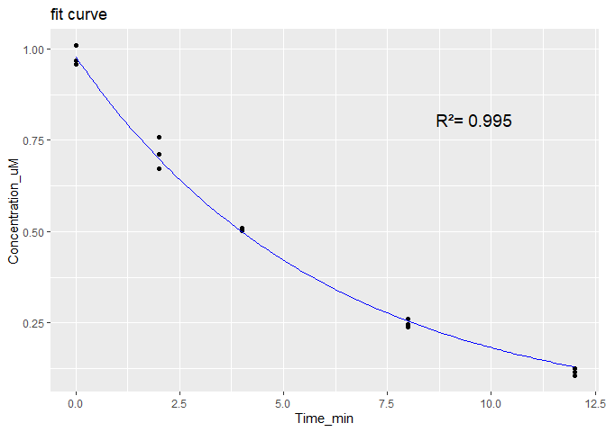

The goal of esqIVIVE is to perform extrapolation of in vitro ADME parameters and derive ADME parameters to input for PBK models.
The functions in this package have been developed focusing on the integration with OSP tools.
Currently there are available codes to calculate: fraction unbound in microsomes :
calculate_fu_mic_austin()
calculate_fu_mic_halifax()
calculate_fu_mic_turner()
fraction unbound in hepatocytes:
calculate_fu_hep_austin()
calculate_fu_hep_kilford()
calculate_fu_hep_poulin()
derive metabolism parameters from experimental curves:
fit_clearance_from_curve()
fit_mm_from_curve()
perform scaling for clearance:
IVIVE_clearance()
IVIVE_MM()
calculate fu_plasma related parameters:
calculate_fu_pls_from_Ks()
predict_plasma_affinities()
correct_fu_pls_pearce()
perform IVIVE to derive Pint:
pint_caco2_empir()
pint_peff_empir()
Examples of how to use the functions are provided for each.
Installation
You can install the development version of esqIVIVE from GitHub with:
# install.packages("devtools")
devtools::install_github("esqLABS/esqIVIVE")Example: clearance IVIVE workflow for midazolam
This example derives the PK-Sim specific clearance of midazolam from a human liver microsome (HLM) incubation in three steps:
- Predict the fraction unbound in the microsomal incubation (fu_mic) and compare it with measured values.
- Fit the depletion rate constant from the raw concentration-time data.
- Scale the in vitro rate constant to an in vivo specific clearance.
The compound properties and the incubation conditions (1 mg/mL microsomal protein, in vitro half-life of 3.9 min) are from Obach (1999), Drug Metab Dispos 27(11):1350-1359.
library(esqIVIVE)
midazolam <- list(
log_lipophilicity = 3.38, # logP at 37 C
ionization = c("neutral", 0),
pka = c(0, 0),
fu_plasma = 0.05,
blood_plasma_ratio = 0.53,
cMicro_mgml = 1 # microsomal protein concentration in the incubation
)1. Fraction unbound in the incubation
calculate_fu_in_vitro() predicts fu_mic with different QSPRs. "All_literature" is the average of the Poulin, Austin, Halifax and Turner regressions.
fu_mic <- calculate_fu_in_vitro(
partition_qspr = "All_literature",
log_lipophilicity = midazolam$log_lipophilicity,
ionization = midazolam$ionization,
pka = midazolam$pka,
type_system = "microsomes",
FBS_fraction = 0,
microplate_type = 96,
volume_medium = 0.5,
fraction_unbound = midazolam$fu_plasma,
blood_plasma_ratio = midazolam$blood_plasma_ratio,
concentration_microsomes = midazolam$cMicro_mgml
)
fu_mic
#> [1] 0.3907191Measured values from the Krumpholz et al. database can be retrieved with get_fu_krumpholz(). The values are averaged per species and microsomal concentration, and n is the number of values averaged:
get_fu_krumpholz("Midazolam", system = "microsomes", species = "human")
#> compound species concentration_mgml fu n
#> 1 Midazolam human 0.025 1.0000000 2
#> 2 Midazolam human 0.050 1.0000000 1
#> 3 Midazolam human 0.200 0.8500000 1
#> 4 Midazolam human 0.250 0.7800000 2
#> 5 Midazolam human 0.500 0.6191667 6
#> 6 Midazolam human 0.710 0.8800000 1
#> 7 Midazolam human 0.760 0.6500000 2
#> 8 Midazolam human 1.000 0.6358750 8
#> 9 Midazolam human 1.490 0.3360000 1
#> 10 Midazolam human NA 0.6140000 32. Depletion rate constant from raw data
fit_clearance_from_curve() fits a mono-exponential decay to the substrate depletion curve (time in min, concentration in µM). It returns the rate constant (kcat, 1/min) with its 95% confidence interval and plots the fit.
The data below are an illustrative depletion curve in triplicate, generated from the midazolam half-life of 3.9 min.
depletion <- data.frame(
Time_min = c(0, 0, 0, 2, 2, 2, 4, 4, 4, 8, 8, 8, 12, 12, 12),
Concentration_uM = c(
0.969, 1.009, 0.959, 0.759, 0.712, 0.673, 0.503, 0.510, 0.506,
0.238, 0.260, 0.246, 0.115, 0.106, 0.125
)
)
kcat <- fit_clearance_from_curve(depletion)
kcat
#> Mean_kcat_min-1 2.5%_CI_kcat 95%_CI_kcat
#> 0.1683673 0.1607129 0.1764242
# in vitro half-life (min)
log(2) / kcat[["Mean_kcat_min-1"]]
#> [1] 4.1168743. IVIVE to the PK-Sim specific clearance
IVIVE_clearance() scales the in vitro rate constant with the microsomal protein per gram liver and the intracellular fraction of the liver, and corrects it for fu_mic. The result is the specific clearance (1/min) to use in the PK-Sim “Liver Plasma Clearance” process.
IVIVE_clearance(
typeValue = "kcat",
units = "/minutes",
expData = kcat[["Mean_kcat_min-1"]],
typeSystem = "microsomes",
fu_invitro = fu_mic,
cProtein_mgml = midazolam$cMicro_mgml
)
#> ClspePermin
#> 23.15373If only the in vitro half-life is reported, it can be used directly:
IVIVE_clearance(
typeValue = "halfLife",
units = "minutes",
expData = 3.9,
typeSystem = "microsomes",
fu_invitro = fu_mic,
cProtein_mgml = midazolam$cMicro_mgml
)
#> ClspePermin
#> 24.43609The vignette Clearance IVIVE check applies this workflow to the 28 drugs of Obach (1999). It simulates their in vivo clearance with PK-Sim PBK models and compares the different IVIVE options.
Contribute
Coding Standards
Contributors should comply with the Open Systems Pharmacology Coding Standards for R
Development Environment
To install all the dependencies required for development, run:
renv::install()Website
With Quarto and the ospsuite/PK-Sim system prerequisites installed, run from the package root:
The script installs pkgdown, the package, and its dependencies, including DESCRIPTION’s Config/Needs/website, before building the website.
The Quarto documents in vignettes/articles/ are pkgdown articles, excluded from the R package build. Rendering the clearance article additionally requires ospsuite and PK-Sim. Generated HTML, supporting files, and results are ignored.